- Repository는 public이어야 함. Private이면 금액을 지불해야 됨
- guthub 에서 로그인한 상태에서 Settings탭 => collaborators 선택
- 다음과 같은 팝업창에서 팀원 검색하여 추가
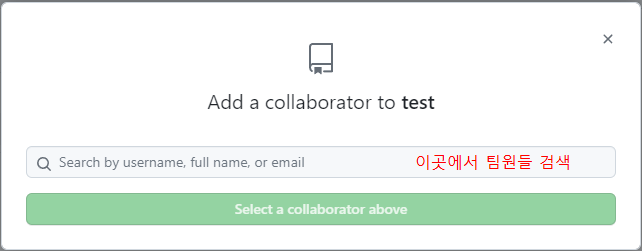- 팀원들은 guthub 에 로그인한 상태에서 Email의 초대장보기를 클릭하여 수락
- 원본 저장소 관리자의 repository main에 접근할 수 있다. 사용방법은 처음 github사용방법의 3번 부터 동일하게 실행
- 직접 main repository에 접근하므로 본인이 수정한 파일이 있는데 이를 올리지 않고 다른 팀원들것을 받으면 내것이 없어질 수 있다
- 내려받을 것이 있으면 내것을 push먼저 한 후, 한파일을 동시에 2명이 작업했을때(충돌시) 옆에 이상한 글씨가 뜸
- 수정후, 다시 push
- 팀원들은 guthub 에 로그인한 상태에서 Email의 초대장보기를 클릭하여 수락
- 깃허브 데스크탑에서 자신들의 branch를 생성한다
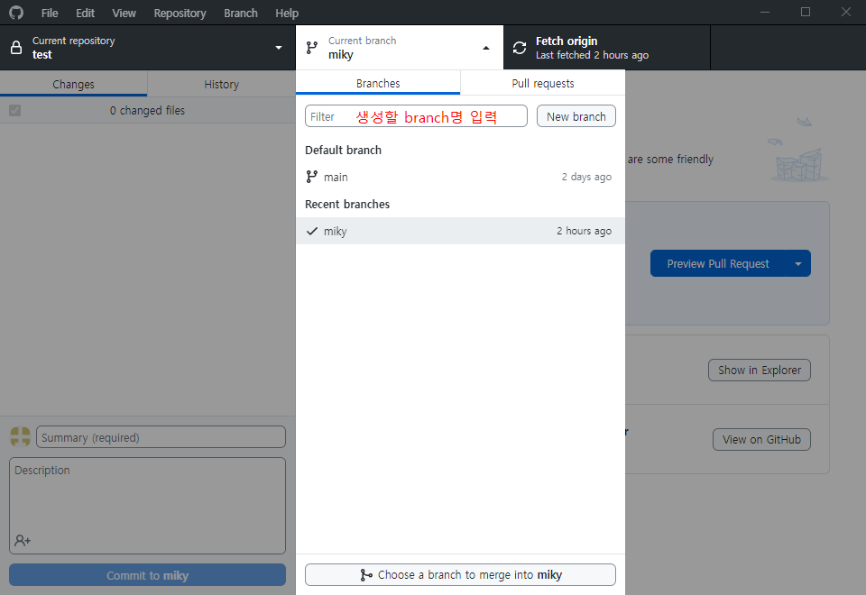- 팀원들은 자신의 저장소에서 수정이 끝나면 commit후 push를 눌러 자신의 branch에 push를 진행시킨다.
- 새로운 창이 열리면 title와 설명(안써도 됨)을 넣고 create한다
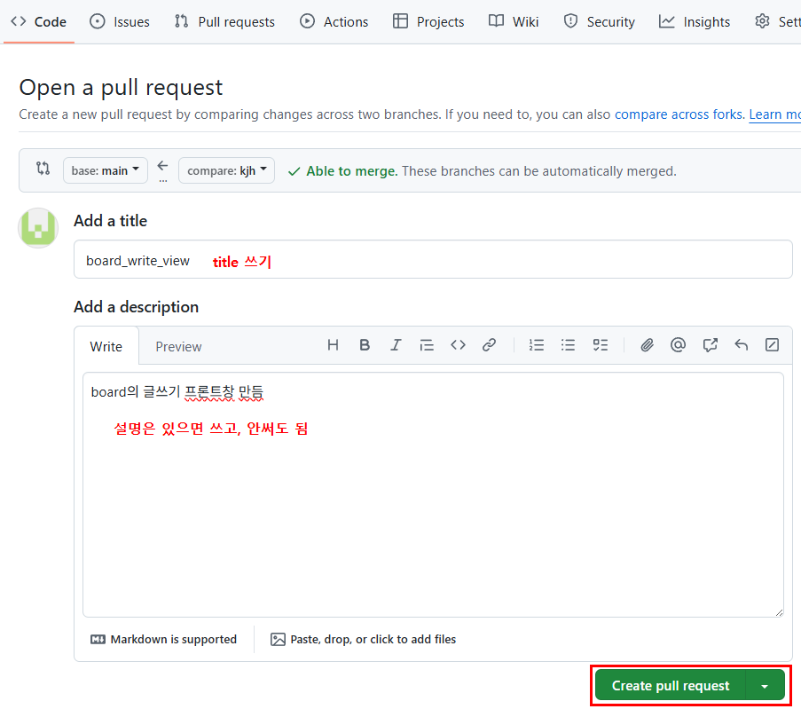- 새로운 창이 열리면 confirm merge
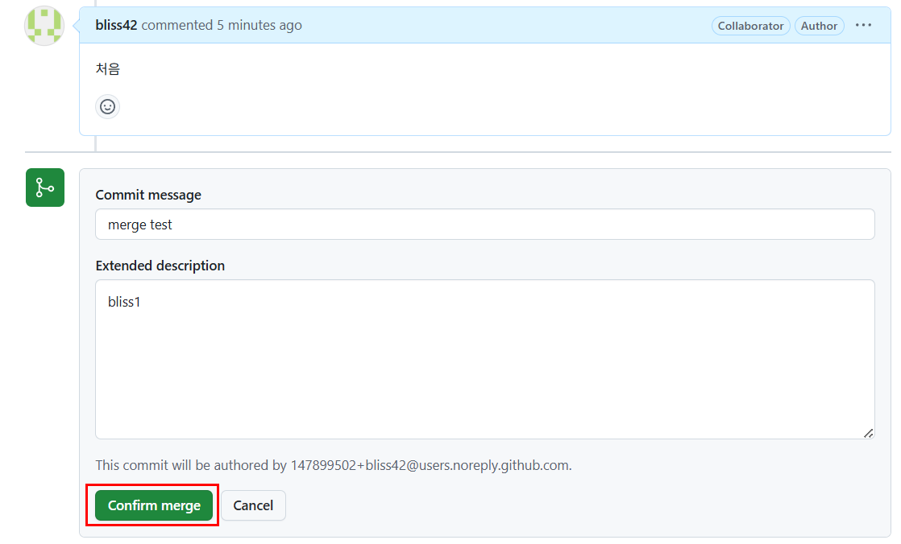- Current branch에서 내가 만든 브런치 선택
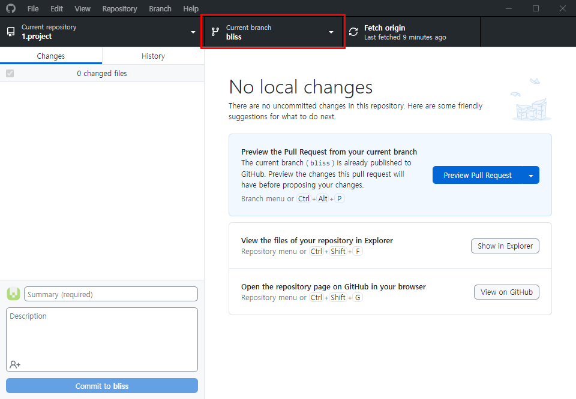- Branch -> Merge into current branch.. 선택
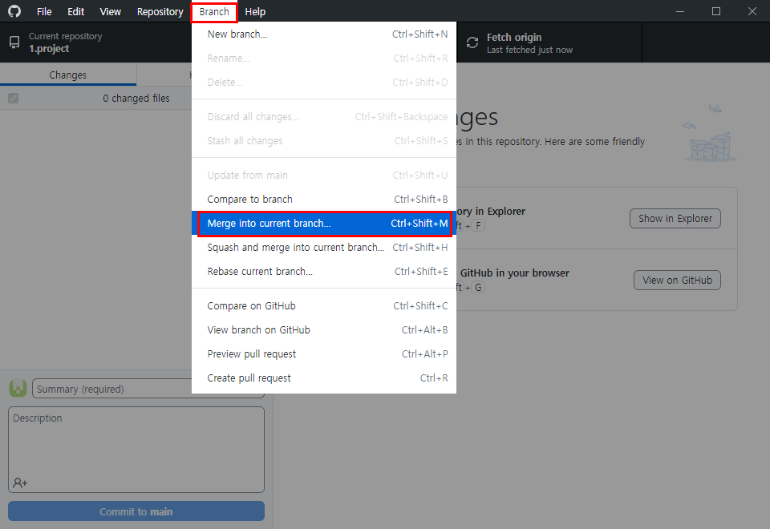- main 선택한 후 Create a merge commit
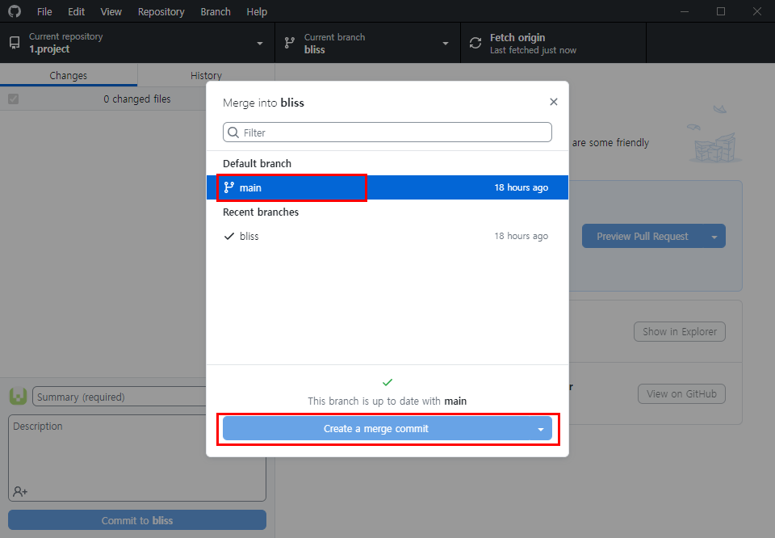- settings에서 Branches 선택
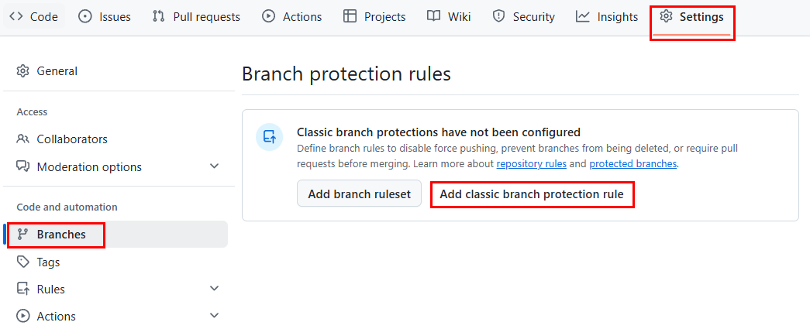- 이름을 넣고 체크
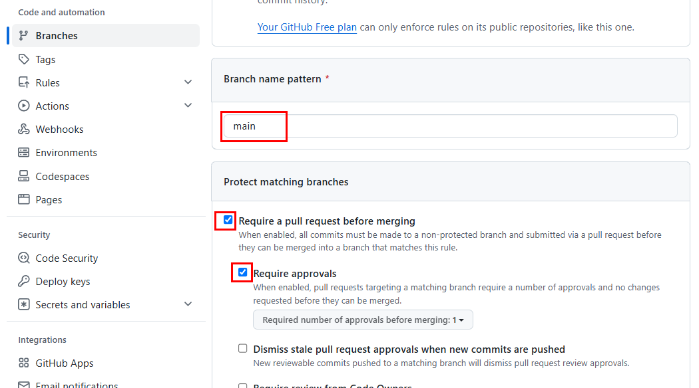- 원본 저장소 관리자는 깃허브 사이트에서 pull request를 받아 새로 올라온 브런치 선택
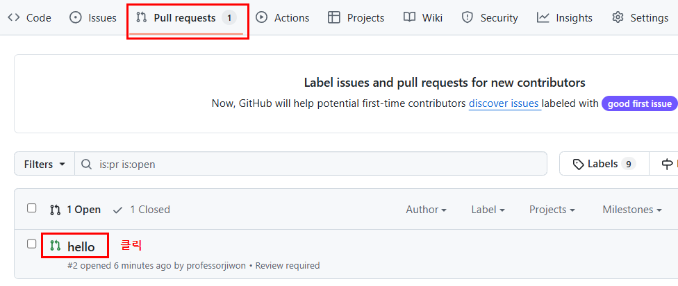- Merge(병합) 여부를 결정한다
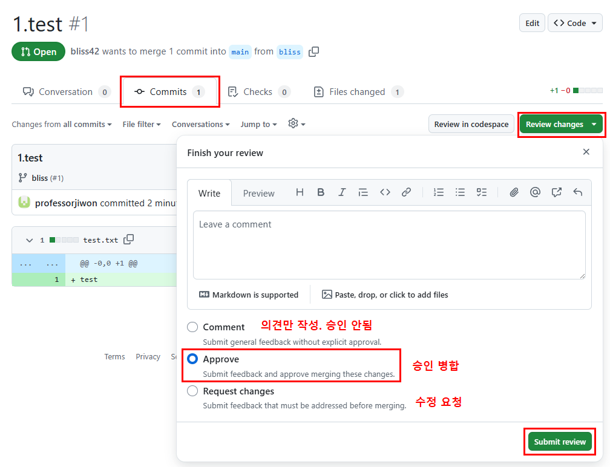- Merge 하기
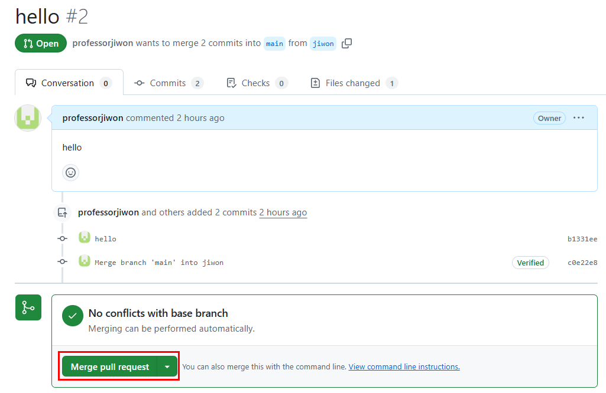> pull request의 옵션
1. Create a Merge Commit
커밋 히스토리가 명확하게 남아 있으며, 병합된 브랜치의 작업 내용이 커밋 로그에 그대로 유지
커밋 로그가 복잡해질 수 있으며, 히스토리에 불필요한 병합 커밋이 추가될 수 있음
2. Squash and Merge
여러 개의 작은 커밋을 하나로 묶어 더 깔끔한 히스토리를 유지
원래의 커밋 메시지와 개별 커밋의 세부 사항이 사라져 세부사항 추적이 어려움
3. Rebase and Merge
병합하려는 브랜치의 커밋을 기본 브랜치 위로 재배치(rebase)한 후 병합. 병합 커밋 없이 직선적인 히스토리를 제공
병합하려는 브랜치의 커밋들이 재배치되므로, 충돌이 발생할 수 있고, 원래 커밋의 타임라인이 변경될 수 있다
- 하단의 Confirm merge 클릭하면 병합 완료
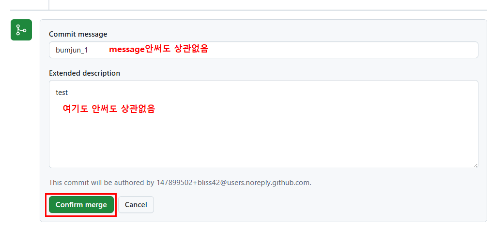